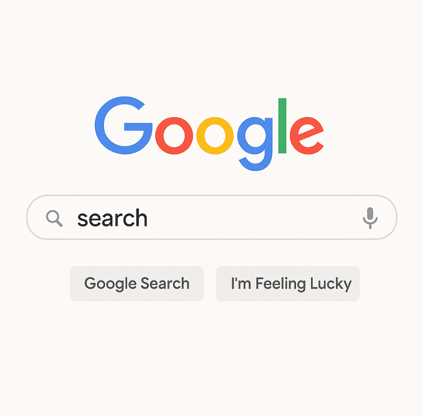

1. Escolher um Navegador
- • Navegador é o programa que você usa para acessar a internet. Exemplos populares incluem Google Chrome, Mozilla Firefox, Safari (para dispositivos Apple) e Microsoft Edge.
- • Abrir o Navegador: Basta clicar no ícone do navegador no seu computador, celular ou tablet para abrir.
2. Acessar um Site
- • Barra de Endereço (URL): Na parte superior do navegador, você verá uma barra de endereço onde pode digitar o endereço de um site. Exemplo: "www.google.com" ou "www.youtube.com".
- • Clicar em Links: Quando você entra em um site, pode navegar clicando em links (geralmente sublinhados ou destacados em uma cor diferente). Isso leva você a outras páginas dentro do mesmo site ou a sites diferentes.
3. Usar a Barra de Pesquisa
- • Pesquisa: Se você não souber o endereço exato de um site, pode usar uma barra de pesquisa (como o Google) para encontrar o que procura.
- • Digite palavras-chave na barra de pesquisa e pressione Enter. O navegador ou a página de pesquisa exibirá uma lista de resultados relacionados.
4. Navegar Entre Páginas
- • Avançar e Voltar: Para ir para a página anterior, use o botão de voltar (seta para a esquerda) do navegador. Para ir para a próxima página, use o botão de avançar (seta para a direita).
- • Atualizar Página: Se uma página não carregar corretamente ou você quiser ver atualizações, use o botão de atualizar (geralmente um ícone de círculo ou seta circular) ao lado da barra de endereço.
5. Abrir Várias Páginas
- • Abas: A maioria dos navegadores permite abrir várias abas ao mesmo tempo. Clique no ícone de "+" na parte superior para abrir uma nova aba e pesquise ou acesse outro site sem fechar o site atual.
- • Navegar entre as Abas: Você pode alternar entre abas clicando na que deseja visualizar.
6. Interagir com Sites
- • Formulários: Muitos sites pedem que você preencha formulários para se inscrever, fazer compras ou enviar informações. Basta preencher os campos e clicar no botão de envio.
- • Botões e Links: Para realizar ações, como ver vídeos ou fazer download de arquivos, basta clicar em botões ou links indicados no site.
7. Pesquisar por Informações
- • Motores de Busca: Para pesquisar informações na internet, você pode usar motores de busca como o Google, Bing ou Yahoo.
- • Pesquisas Específicas: Digite palavras-chave ou perguntas na barra de pesquisa, e os motores de busca exibirão uma lista de resultados relacionados ao seu interesse.
8. Segurança na Navegação
- • Sites Seguros: Verifique se o site é seguro antes de inserir informações pessoais ou realizar transações. Sites seguros têm "https://" no início da URL e um ícone de cadeado na barra de endereço.
- • Evite Links Suspeitos: Cuidado com links desconhecidos ou suspeitos que podem levar a sites falsos ou prejudiciais.
- • Antivírus: Mantenha um antivírus atualizado para proteger seu computador ou dispositivo contra ameaças enquanto navega na internet.
9. Fazer Download
- • Arquivos: Para baixar arquivos, procure o botão de download no site. Lembre-se de que baixar arquivos de sites não confiáveis pode ser arriscado.
- • Pastas de Download: Os arquivos baixados geralmente são salvos na pasta "Downloads" do seu dispositivo, onde você pode acessá-los depois.
10. Encerrar a Navegação
- • Quando terminar de navegar, você pode fechar o navegador ou as abas abertas.

Pesquisando no Google
- 1. Acessando o Google
• Pelo Navegador: Abra qualquer navegador de internet (Chrome, Safari, Firefox, etc.) e vá para o site oficial do Google: www.google.com.
• Aplicativo do Google: No celular, você pode usar o aplicativo do Google para realizar pesquisas. - 2. Fazendo a Pesquisa
• Barra de Pesquisa: No centro da página ou na parte superior do app, você verá uma barra de pesquisa. Basta clicar ou tocar nela.
• Digitar o que deseja pesquisar: Digite palavras-chave ou uma pergunta relacionada ao que você está buscando. Por exemplo, "melhores restaurantes em São Paulo" ou "como aprender a tocar violão".
• Sugestões de pesquisa: Enquanto digita, o Google pode mostrar sugestões automáticas baseadas em pesquisas populares ou em seu histórico de busca. Você pode escolher uma dessas sugestões ou continuar digitando.
• Pesquisar: Após digitar o que deseja, pressione a tecla Enter (no computador) ou toque no ícone de lupa (no celular) para realizar a pesquisa. - 3. Refinando os Resultados
• Filtros de Pesquisa: Na página de resultados, você verá várias opções para refinar sua pesquisa, como:
◦ Imagens: Se você deseja ver resultados em imagens, clique na aba "Imagens" logo abaixo da barra de pesquisa.
◦ Vídeos: Se está procurando vídeos, clique na aba "Vídeos".
◦ Notícias: Para buscar notícias recentes, clique na aba "Notícias".
◦ Maps: Para encontrar lugares no Google Maps, clique na aba "Maps".
• Ferramentas de Pesquisa: Dependendo do tipo de pesquisa, o Google oferece ferramentas adicionais para filtrar os resultados por data, tipo de conteúdo ou localização. - 4. Interpretando os Resultados
• Primeira Página: A primeira página de resultados geralmente exibe os links mais relevantes para a sua pesquisa. Eles podem incluir:
◦ Links de websites: Sites relacionados ao que você procurou.
◦ Featured Snippets: Respostas curtas e diretas para perguntas, que aparecem no topo.
◦ Caixas de respostas: Exemplos, cálculos, ou definições rápidas de palavras.
◦ Anúncios: Algumas pesquisas podem exibir anúncios patrocinados no topo ou ao lado dos resultados. - 5. Usando Perguntas ou Comandos Específicos
• Perguntas diretas: Você pode digitar perguntas diretamente e o Google tentará oferecer a resposta mais precisa. Exemplo: "qual é a capital do Japão?".
• Conversão de unidades: O Google pode ajudar com conversões simples, como "quantos metros tem 5 milhas?".
• Cálculos: Você pode realizar cálculos diretamente na barra de pesquisa. Exemplo: "25 * 16".